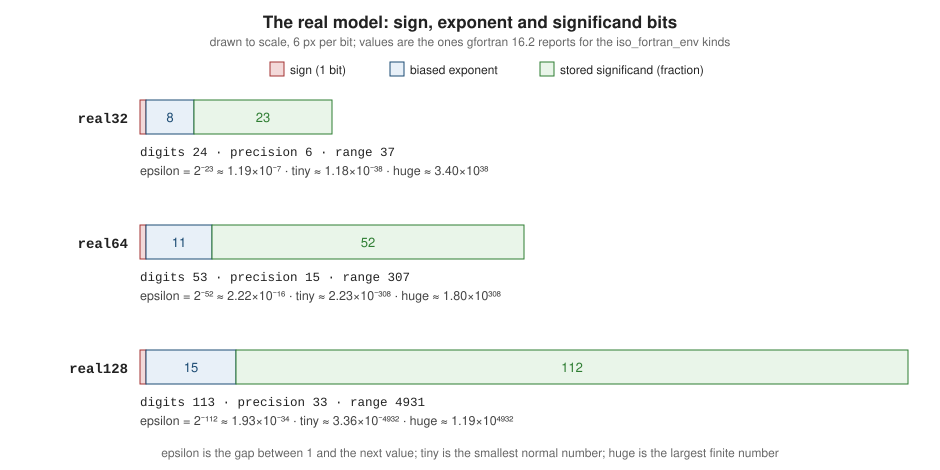

Intrinsic Types and Kinds
|
This content was generated with the assistance of AI and should be verified against the official documentation before being relied on in production. |
This page is written against Fortran 2023 (ISO/IEC 1539-1:2023, final draft J3/23-007r1, cited as "S" with clause numbers). Examples were
checked with GNU Fortran 16.2 under gfortran -std=f2023 -Wall -Wextra -pedantic -fimplicit-none -fcheck=all and with LLVM Flang 23, on an
aarch64 Linux container, and the output shown is the real output. Kind numbers, the extra kinds a compiler offers and some
inquiry results are processor dependent, so wherever a value below comes from one machine the text says so. Every example except the
kinds module itself uses that module, so all programs are compiled together with it, for example
gfortran -std=f2023 -Wall -Wextra -pedantic -fimplicit-none -fcheck=all heatflow_kinds.f90 literals.f90.
Fortran was designed for numerical computing, and its type system reflects that: the numeric types are first-class, their precision and range are chosen by an explicit kind type parameter instead of by a family of differently named types, and the language defines a numeric model that lets a program ask how precise and how large its numbers are. This page is the reference for the five intrinsic types and for kinds. Declarations and attributes are on Variables, Declarations and Attributes, operators and assignment on Expressions and Assignment, character handling in depth on Characters and Strings, the bit-level numeric model functions on Numeric Model, Bit Manipulation and Conversion, the kind constants of the intrinsic modules on Intrinsic Modules and iso_fortran_env, and IEEE arithmetic on Floating-Point and IEEE Arithmetic. The same material for other languages is on Basic Types & Values in C, Types & Values in Rust and Types and Values in Go.
The intrinsic types
A type is a set of values, a set of operations on them and a way to write constants (S 7.1). Fortran has five intrinsic types, which the language provides without any declaration, and derived types that programs define (see Derived Types). Three of the intrinsic types are numeric and two are nonnumeric (S 7.4.1).
Every intrinsic type has a kind type parameter named kind whose value is a default integer; character also has a length type parameter len
(S 7.2, 7.4.4.2). The kind selects a representation method that exists on the processor; the length is the number of characters.
| Type | Type specifier | What the kind selects | Literal constants | S |
|---|---|---|---|---|
integer |
|
a signed binary integer representation with a decimal exponent range |
|
7.4.3.1 |
real |
|
an approximation method with a decimal precision, a decimal exponent range and a radix |
|
7.4.3.2 |
complex |
|
the real approximation method used for both parts |
|
7.4.3.3 |
logical |
|
a storage size for the two values |
|
7.4.5 |
character |
|
a character set (ASCII, ISO 10646 and others) |
|
7.4.4 |
There is no float, double, short or long, and no separate byte or char integer type. A one-character string is a character(len=1),
a small integer is integer(int8), and a 64-bit float is real(real64). A named constant, or a kind parameter, is a constant of type integer; it can be
used as a kind-param in a literal (3_lp) or in a kind-selector in a declaration (real(dp)).
Kind selectors, in all their spellings
The standard kind selector is (kind=expr) or just (expr), where expr is a scalar integer constant expression whose value must be a kind the
processor supports (S 7.4.1, constraint C717); selecting a missing kind is a compile-time error (example 15 below). Each of these declares the same
64-bit real on gfortran and Flang, but they are not equally good:
| Spelling | Standard? | Comment |
|---|---|---|
|
yes |
recommended: one place to change the precision |
|
yes |
portable and explicit; |
|
yes |
portable; asks for what the algorithm needs instead of for a size |
|
yes |
the processor’s second real kind; always larger than default |
|
yes, but not portable |
the number 8 is a kind value, which only coincidentally equals the byte count on gfortran and Flang |
|
no |
a pre-Fortran 77 extension; rejected under |
The same applies to the other numeric types: integer(int32), complex(dp), logical(selected_logical_kind(8)). For character the length
and kind are combined in the char-selector: character(len=20), character(len=*), character(len=:), allocatable, character(kind=ucs4, len=5); the form
character*20 is the obsolescent CHARACTER* form (S B.3.8). A type-param-value of * or : is covered on the characters page.
Why default real is single precision, and what "default" means
An unadorned integer, real or logical has the default kind, and double precision is the kind of 0.0d0. The standard does not give those kinds a bit size; it
gives relations. In storage association contexts (equivalence, common, and the sequence of storage units an I/O list can occupy) a default
integer, default real and default logical each occupy one numeric storage unit, and a double precision real or a default complex occupies two (S 19.5.3.2).
The decimal precision of double precision must exceed that of default real, must be at least 10 digits, and have a decimal exponent range of at least 37 (S 7.4.3.2). The
standard also recommends, but does not require, at least 6 digits and exponent range 37 for default real. Default integer has a decimal
exponent range of at least 5 (S 7.4.3.1), and every processor must supply an integer kind with range at least 18.
That is why default real is single precision in practice. The rules grew from machines with a 32-bit or 36-bit word, where real was one word
and double precision two; every compiler today follows that convention, and a program that wrote real in 1980 gets the same 32-bit float
today. Making it twice as wide would silently change the memory footprint, the layout of unformatted files and the behaviour of everything
that equivalences a real with an integer. It also means that writing real :: x for a scientific quantity gives roughly seven digits, which
is rarely what a numerical simulation wants. Modern code therefore names its kinds explicitly.
01_heatflow_kinds.f90)module heatflow_kinds
use, intrinsic :: iso_fortran_env, only: int32, int64, real32, real64
implicit none
private
public :: sp, dp, ip, lp
integer, parameter :: sp = real32
integer, parameter :: dp = real64
integer, parameter :: ip = int32
integer, parameter :: lp = int64
end module heatflow_kindsExample 1 defines the project kinds module used by every heatflow module: sp and dp for single and double precision reals, ip and lp for
32-bit and 64-bit integers. Programs then say real(dp), integer(lp) and spell their constants 1.0_dp. If the whole project must move to quad precision,
only this file changes. The module is private with an explicit public list so that the use, intrinsic :: iso_fortran_env, only: names do not leak
into every client. The fortran-lang best-practices guide recommends the same pattern, and the stdlib module stdlib_kinds provides a ready-made one with sp, dp, qp and int8 to int64
(see Fortran stdlib).
Source: fortran-lang.org: Best practices, floating point numbers and J3/23-007r1, 16.10.2 (ISO_FORTRAN_ENV)
02_default_kinds.f90)program show_default_kinds
use heatflow_kinds, only: sp, dp, ip, lp
implicit none
integer :: i
real :: x
double precision :: d
complex :: z
logical :: flag
character :: ch
print '(a, i0)', 'kind(i) = ', kind(i)
print '(a, i0)', 'kind(x) = ', kind(x)
print '(a, i0)', 'kind(d) = ', kind(d)
print '(a, i0)', 'kind(z) = ', kind(z)
print '(a, i0)', 'kind(flag) = ', kind(flag)
print '(a, i0)', 'kind(ch) = ', kind(ch)
print '(a, 4(i0, 1x))', 'sp dp ip lp = ', sp, dp, ip, lp
print '(a, l1)', 'default real is sp: ', kind(x) == sp
print '(a, l1)', 'double precision is dp: ', kind(d) == dp
end program show_default_kindsOutput (gfortran 16.2, strict flags; LLVM Flang 23 prints the same unless noted in the text):
kind(i) = 4
kind(x) = 4
kind(d) = 8
kind(z) = 4
kind(flag) = 4
kind(ch) = 1
sp dp ip lp = 4 8 4 8
default real is sp: T
double precision is dp: TThe default kinds are exactly what the rules predict: integer, real and logical share kind 4 here, double precision is kind 8, a default complex has the
kind of default real, and default character is kind 1. These numbers are processor dependent. On gfortran and Flang the kind value is the size in bytes, which is
why real(8) works there. Other compilers number kinds differently (NAG Fortran, for example, numbers them consecutively by default), so a program that hard-codes 8 or 4 is
not portable; the section below shows how to ask for what you need.
Source: J3/23-007r1, 7.4.3 and 19.5.3.2
Compiler flags that change the defaults
gfortran can promote default kinds for the whole compilation: -fdefault-real-8 makes default real (and constants such as 1.0) 8 bytes wide and, unless
-fdefault-double-8 is also given, promotes double precision to 16 bytes; -fdefault-integer-8 makes default integer and logical 8 bytes wide and the
kind of constants like 42; -finteger-4-integer-8 and the -freal-4-real-8 family promote entities declared with an explicit kind. They are
useful for compiling legacy code that assumes 8-byte reals, but they change the meaning of the source, break interfaces to libraries compiled without them, and
do not protect explicit-kind code. New code should not rely on them; use a kinds module instead. Other vendors have comparable options, listed on
Compilers and Compiler Options.
Choosing a kind portably
There are two portable ways to get a kind, and they answer different questions.
-
Ask for what the algorithm needs:
selected_int_kind(r),selected_real_kind(p, r, radix),selected_char_kind(name)and, new in Fortran 2023,selected_logical_kind(bits). The processor returns the smallest kind that satisfies the request, or a negative number if none does. -
Ask for a size: the named constants of the intrinsic module
iso_fortran_env(int8,int16,int32,int64,real16,real32,real64,real128,logical8tological64), and the arraysinteger_kinds,real_kinds,logical_kindsandcharacter_kindsthat list every supported kind (S 16.10.2).
03_selected_kinds.f90)program selected_kinds
implicit none
integer :: digits10
integer :: k
print '(a)', 'selected_int_kind(r): smallest decimal range of 10**r'
do digits10 = 1, 20, 3
k = selected_int_kind(digits10)
print '(a, i2, a, i3)', ' r = ', digits10, ' -> kind ', k
end do
print '(a)', 'selected_real_kind(p, r, radix)'
print '(a, i0)', ' p=6, r=37 -> ', selected_real_kind(6, 37)
print '(a, i0)', ' p=15, r=307 -> ', selected_real_kind(15, 307)
print '(a, i0)', ' p=18 -> ', selected_real_kind(18)
print '(a, i0)', ' p=33 -> ', selected_real_kind(33)
print '(a, i0)', ' p=40 (none) -> ', selected_real_kind(40)
print '(a, i0)', ' p=6, r=5000 -> ', selected_real_kind(6, 5000)
print '(a, i0)', ' p=40, r=5000 -> ', selected_real_kind(40, 5000)
print '(a, i0)', ' radix=10 (none) -> ', selected_real_kind(radix=10)
print '(a)', 'selected_char_kind'
print '(a, i0)', ' "default" -> ', selected_char_kind('default')
print '(a, i0)', ' "ascii" -> ', selected_char_kind('ascii')
print '(a, i0)', ' "iso_10646" -> ', selected_char_kind('iso_10646')
print '(a, i0)', ' "other" -> ', selected_char_kind('other')
end program selected_kindsOutput (gfortran 16.2, strict flags; LLVM Flang 23 prints the same unless noted in the text):
selected_int_kind(r): smallest decimal range of 10**r
r = 1 -> kind 1
r = 4 -> kind 2
r = 7 -> kind 4
r = 10 -> kind 8
r = 13 -> kind 8
r = 16 -> kind 8
r = 19 -> kind 16
selected_real_kind(p, r, radix)
p=6, r=37 -> 4
p=15, r=307 -> 8
p=18 -> 16
p=33 -> 16
p=40 (none) -> -1
p=6, r=5000 -> -2
p=40, r=5000 -> -3
radix=10 (none) -> -5
selected_char_kind
"default" -> 1
"ascii" -> 1
"iso_10646" -> 4
"other" -> -1How to read the results:
-
selected_int_kind(r)returns the kind with the smallest decimal exponent range that represents every integernwith-10**r < n < 10**r(S 16.9.181). Herer=4gives kind 2 (16-bit),r=10gives 8 (64-bit), andr=19gives 16 (128-bit); this container’s gfortran supports a 128-bit integer. If no kind is large enough the result is -1. -
selected_real_kind(p, r, radix)returns the kind with the smallest precision that has at leastpdecimal digits, a decimal exponent range of at leastrand, if given, the radixradix(S 16.9.183). At least one ofpandrmust be present; an absent one is taken as zero. When no kind qualifies the result is negative, and the value says why: -1 means the precision cannot be met, -2 the range, -3 neither, -4 each can be met but not together, and -5 means there is no real kind with that radix. The requestp=18returned kind 16 here because this aarch64 machine has no 80-bit extended type; on an x86-64 target gfortran also offers the x87 80-bit kind 10, and the same call returns 10. -
selected_char_kind('default')and'ascii'return the default and ASCII kinds, and'iso_10646'returns the kind that holds UCS-4 characters (S 16.9.180). Any other name returns -1. gfortran uses kind 4 foriso_10646. -
A negative result is not a valid kind: declaring
real(selected_real_kind(40))is a compile-time error, and you can test the value with aparameterbefore using it. Forselected_*_kindcalls with constant arguments, keep the result in a named constant (integer, parameter :: dp = selected_real_kind(15, 307)) so it is available as a kind parameter.
The old idiom selected_real_kind(15, 307) for double precision predates real64 (Fortran 2008). Both are correct; the first asks for a specification
(at least 15 digits and exponent range 307), so it picks a wider type on a processor without an exact 64-bit real, while real64 insists on exactly 64 bits of storage.
The IEEE binary64 format has precision(x)=15 and range(x)=307, so on all current compilers the two agree.
Source: GNU Fortran manual: SELECTED_REAL_KIND, SELECTED_INT_KIND and SELECTED_CHAR_KIND; J3/23-007r1, 16.9.180 to 16.9.183
04_iso_fortran_env_kinds.f90)program env_kinds
use, intrinsic :: iso_fortran_env, only: integer_kinds, real_kinds, logical_kinds, &
character_kinds, int8, int16, int32, int64, &
real16, real32, real64, real128
implicit none
print '(a, *(i0, 1x))', 'integer_kinds: ', integer_kinds
print '(a, *(i0, 1x))', 'real_kinds: ', real_kinds
print '(a, *(i0, 1x))', 'logical_kinds: ', logical_kinds
print '(a, *(i0, 1x))', 'character_kinds: ', character_kinds
print '(a, 4(i0, 1x))', 'int8..int64: ', int8, int16, int32, int64
print '(a, 4(i0, 1x))', 'real16..real128: ', real16, real32, real64, real128
end program env_kindsOutput (gfortran 16.2, strict flags; LLVM Flang 23 prints the same unless noted in the text):
integer_kinds: 1 2 4 8 16
real_kinds: 4 8 16
logical_kinds: 1 2 4 8 16
character_kinds: 1 4
int8..int64: 1 2 4 8
real16..real128: -2 4 8 16The iso_fortran_env constants are bit sizes: int32 is the kind of the 32-bit integer, real64 of the 64-bit real. If the processor has no kind of a size, the
constant is -2 when it has a larger kind and -1 otherwise (S 16.10.2.14 and 16.10.2.27), which is why real16 printed -2 under gfortran: it has no half-precision real here but has larger ones. Using a
negative constant as a kind is a compile-time error, so the mistake cannot reach run time. LLVM Flang 23 behaves differently on the extra kinds, which is a good illustration of "processor dependent":
| Entity | gfortran 16.2 (aarch64) | LLVM Flang 23 (aarch64) |
|---|---|---|
|
1 2 4 8 16 |
1 2 4 8 16 |
|
4 8 16 |
2 3 4 8 16 (kind 2 is binary16, kind 3 is bfloat16) |
|
1 2 4 8 16 |
1 2 4 8 |
|
1 4 |
1 2 4 |
|
-2 |
2 |
Fortran 2023 added real16 to the named constants of iso_fortran_env and added logical8, logical16, logical32 and logical64 (Foreword of S, "Intrinsic modules"). Older
compilers may lack them, in which case selected_real_kind(3, 4) style requests or an explicit real_kinds search work as a fallback. A portable way to enumerate is
simply to loop over real_kinds. How complex, logical and character kinds look is in the next sections.
Which one to use
| Approach | Strengths | Weaknesses |
|---|---|---|
|
exact size, matches IEEE and C |
a negative value when the size is missing; names a size, not a need |
|
portable; expresses numerical requirements; works on any compiler since Fortran 90 |
may select a type wider than you assumed; result needs checking |
Literal kind numbers ( |
none |
not portable; hides intent; cannot be searched for |
Compiler flags ( |
recompiles legacy code without edits |
changes the language rules for the whole compilation; breaks library interfaces |
A project kinds module (example 1) |
single point of control; selects among the above |
one more module to maintain; clients must |
A common third-party convention, followed by heatflow, is the kinds module defined as sp = real32, dp = real64, qp = real128 and so on, with the C-interoperable kinds
(c_double, c_int, …) taken from iso_c_binding only at interface boundaries (see Interoperability with C).
The numeric model
A numeric kind is described by a model (S 16.4), and a small set of inquiry functions reports the parameters of the model for a given kind. The argument is only used for its type and kind,
so it need not be defined. The functions are kind, digits, precision, range, radix, huge, tiny, epsilon, minexponent, maxexponent and, for integers and bits, bit_size
and storage_size.
05_numeric_model.f90)program numeric_model
use, intrinsic :: iso_fortran_env, only: int8, int16, int32, int64, real32, real64, real128
implicit none
real(real32) :: a
real(real64) :: b
real(real128) :: c
print '(a)', 'Integer models: huge, digits, range, bit_size'
print '(a, i0, 2(1x, i0))', 'int8 ', huge(1_int8), range(1_int8), bit_size(1_int8)
print '(a, i0, 2(1x, i0))', 'int16 ', huge(1_int16), range(1_int16), bit_size(1_int16)
print '(a, i0, 2(1x, i0))', 'int32 ', huge(1_int32), range(1_int32), bit_size(1_int32)
print '(a, i0, 2(1x, i0))', 'int64 ', huge(1_int64), range(1_int64), bit_size(1_int64)
print '(a)', 'Real models'
print '(a, i0, 1x, i0, 1x, i0, 1x, i0, 1x, i0)', 'real32 radix digits precision range minexponent: ', &
radix(a), digits(a), precision(a), range(a), minexponent(a)
print '(a, i0, 1x, i0, 1x, i0, 1x, i0, 1x, i0)', 'real64 radix digits precision range minexponent: ', &
radix(b), digits(b), precision(b), range(b), minexponent(b)
print '(a, i0, 1x, i0, 1x, i0, 1x, i0, 1x, i0)', 'real128 radix digits precision range minexponent: ', &
radix(c), digits(c), precision(c), range(c), minexponent(c)
print '(a, i0, 1x, i0, 1x, i0)', 'maxexponent real32/64/128: ', maxexponent(a), maxexponent(b), maxexponent(c)
print '(a, es14.5e4)', 'epsilon real32 = ', epsilon(a)
print '(a, es14.5e4)', 'epsilon real64 = ', epsilon(b)
print '(a, es14.5e4)', 'tiny real32 = ', tiny(a)
print '(a, es14.5e4)', 'tiny real64 = ', tiny(b)
print '(a, es14.5e4)', 'huge real32 = ', huge(a)
print '(a, es14.5e4)', 'huge real64 = ', huge(b)
print '(a, es14.5e4)', 'epsilon real128 = ', epsilon(c)
print '(a, es14.5e4)', 'tiny real128 = ', tiny(c)
print '(a, es14.5e4)', 'huge real128 = ', huge(c)
end program numeric_modelOutput (gfortran 16.2, strict flags; LLVM Flang 23 prints the same unless noted in the text):
Integer models: huge, digits, range, bit_size
int8 127 2 8
int16 32767 4 16
int32 2147483647 9 32
int64 9223372036854775807 18 64
Real models
real32 radix digits precision range minexponent: 2 24 6 37 -125
real64 radix digits precision range minexponent: 2 53 15 307 -1021
real128 radix digits precision range minexponent: 2 113 33 4931 -16381
maxexponent real32/64/128: 128 1024 16384
epsilon real32 = 1.19209E-0007
epsilon real64 = 2.22045E-0016
tiny real32 = 1.17549E-0038
tiny real64 = 2.22507E-0308
huge real32 = 3.40282E+0038
huge real64 = 1.79769E+0308
epsilon real128 = 1.92593E-0034
tiny real128 = 3.36210E-4932
huge real128 = 1.18973E+4932| Function | Meaning |
|---|---|
|
the number of significant digits in the model’s radix (for IEEE binary reals: 24, 53, 113, counting the implicit leading bit; for integers, the number of value bits) |
|
the equivalent number of decimal digits that are always preserved: 6, 15, 33 for the three reals above |
|
for reals, the decimal exponent range (37, 307, 4931); for integers, the largest |
|
the base of the model, 2 on every current processor |
|
the difference between 1 and the next larger value of the kind, |
|
the smallest positive normal number, |
|
the largest finite value of a real, or the largest value of an integer ( |
|
the smallest and largest exponents of the model, in the radix of |
|
the number of bits of an integer model ( |
|
the size of an object of that type and kind in bits, including padding; also usable on derived types |
They are inquiry functions, so they can be used in constant expressions, so real(dp), parameter :: eps = 10 * epsilon(1.0_dp) is legal.
The integer range and the real precision and range are what selected_int_kind and selected_real_kind compare against. The program prints with the edit descriptor es14.5e4: a first attempt with es12.5 printed only asterisks for the real128 limits, because their four-digit exponents do not fit, which is a typical stumbling block
when printing extreme values (see Format Specifications and Edit Descriptors).
The next figure shows where those numbers come from for the three IEEE binary real kinds: one sign bit, a biased exponent field, and a stored fraction with an implicit leading one.
epsilon is 2 to the power of minus (stored fraction bits), tiny and huge follow from the exponent field. The figure is to scale (6 pixels per bit).

Source: J3/23-007r1, 16.4 and 16.9.71, 16.9.78, 16.9.96, 16.9.162, 16.9.170, 16.9.209 and GNU Fortran manual: EPSILON, HUGE, TINY, PRECISION, RANGE
The functions that decompose a value (exponent, fraction, spacing, nearest, rrspacing, scale, set_exponent) and the bit-level transfer, ibits, shiftl and so on are on
Numeric Model, Bit Manipulation and Conversion.
Integers
An integer kind is a signed binary integer with a decimal exponent range (range) and, in practice, a power-of-two number of bits. The standard gives no guaranteed width beyond a
default range of at least 5 and a kind with range at least 18 (S 7.4.3.1), which is why integer is 32 bits everywhere in practice. Integer constants are decimal; a kind
suffix selects a non-default kind, either a named constant (3_lp) or, non-portably, a number (3_8). An unsuffixed integer constant is default integer, so a value above huge(1) needs a suffix, as example 7 shows.
iso_fortran_env kind |
bit_size |
huge |
Typical use |
|---|---|---|---|
|
8 |
127 |
small tables, byte buffers; no arithmetic promotion issues for I/O |
|
16 |
32767 |
compact index arrays, image samples |
|
32 |
2147483647 |
default integers, loop counters, array extents ( |
|
64 |
9223372036854775807 |
file offsets, counts of cells or particles, time stamps ( |
No unsigned integers
Fortran 2023 has no unsigned integer type: every integer kind is signed, huge is its largest value, and the bit-manipulation intrinsics such as iand, shiftl and ibits treat integers as bit patterns. A program that needs unsigned arithmetic
therefore uses a wider signed integer (int64 to hold a uint32) or the bit intrinsics (bge, bgt, ble, blt compare as unsigned bit patterns). The iso_c_binding kinds
c_int, c_long and so on are signed too, so unsigned C arguments are passed as the signed type of the same width and interpreted with bit operations.
GNU Fortran has an experimental extension, enabled by -funsigned, that adds an unsigned type with its own kinds (selected_unsigned_kind), a u literal suffix and the
conversion function uint, following the J3 paper J3/24-116. Arithmetic is modulo 2 to the power of the bit size, mixing with other types needs an explicit conversion, and
unsigned values cannot be loop variables or array indices. The gfortran manual says that gfortran’s unsigned integers are compatible with Flang’s. It is not part of Fortran 2023, so
it is an extension, not standard-conforming code: the example below is rejected under -std=f2023 and was compiled with -funsigned instead of the -std=f2023 -pedantic set.
06_unsigned_extension.f90)program unsigned_extension
implicit none
unsigned :: u, v
unsigned(kind=1) :: byte
u = 3u
v = 5u
print '(a, i0)', 'u - v wraps modulo 2**32: ', u - v
byte = 250u_1
byte = byte + 10u_1
print '(a, i0)', '250u_1 + 10u_1 in 8 bits: ', byte
print '(a, i0)', 'huge(u) = ', huge(u)
print '(a, i0, 1x, i0)', 'kind(u), kind(byte): ', kind(u), kind(byte)
print '(a, i0)', 'uint(-1) = ', uint(-1)
end program unsigned_extensionCompiled with gfortran -funsigned -Wall -Wextra -fimplicit-none -fcheck=all, not with -std=f2023; output:
u - v wraps modulo 2**32: 4294967294
250u_1 + 10u_1 in 8 bits: 4
huge(u) = 4294967295
kind(u), kind(byte): 4 1
uint(-1) = 4294967295Reals
A real kind approximates the real numbers. It has a radix (always 2 today), a precision in digits, a minimum and maximum exponent and a decimal exponent range; all are reported by the
inquiry functions above. The standard does not require IEEE 754 formats, but every processor in this survey uses binary32, binary64 and, where present, binary128; whether a program can also rely on
IEEE exceptions, rounding modes and infinities is the subject of Floating-Point and IEEE Arithmetic. A processor that distinguishes
-0.0 and 0.0 must treat them as equal in relational operations (S 7.4.3.2); sign(1.0, x) distinguishes them.
Literal constants and kind suffixes
The grammar (S 7.4.3.2, R714 to R717) allows a significand with a decimal point, an optional exponent and an optional kind suffix. A real constant without a kind parameter is
default real when it has no exponent or the exponent letter E, and double precision when the letter is D. With a kind suffix the exponent letter must be E (constraint C721), so
1.5d3_dp is an error. A kind suffix is either a digit string (non-portable) or a named integer constant.
07_literals_and_precision.f90)program literals_and_precision
use heatflow_kinds, only: sp, dp, lp
implicit none
real(dp) :: wrong, right, via_d
integer(lp) :: big
wrong = 0.1 ! single precision constant, converted on assignment
right = 0.1_dp
via_d = 0.1d0
print '(a, es25.17)', '0.1 -> ', wrong
print '(a, es25.17)', '0.1_dp -> ', right
print '(a, es25.17)', '0.1d0 -> ', via_d
print '(a, l1)', 'wrong differs from right: ', abs(wrong - right) > 0.0_dp
print '(a, l1)', 'right differs from via_d: ', abs(right - via_d) > 0.0_dp
print '(a, es25.17)', '0.1_sp -> ', real(0.1_sp, dp)
print '(a, es12.4, 1x, es12.4, 1x, es12.4)', 'exponent forms: ', 1.5e3_dp, 1.5d3, 15e2_dp
print '(a, es12.4)', 'leading dot: .5e-3_sp = ', .5e-3_sp
print '(a, f4.1)', 'trailing dot: ', 3._dp
big = 3000000000_lp
print '(a, i0)', '3000000000_lp = ', big
print '(a, i0)', 'kind of 5_lp = ', kind(5_lp)
print '(a, i0)', 'kind of 5 = ', kind(5)
print '(a, i0)', 'kind of 1.0 = ', kind(1.0)
print '(a, i0)', 'kind of 1.0d0 = ', kind(1.0d0)
print '(a, i0)', 'kind of 1.0_8 = ', kind(1.0_8)
end program literals_and_precisionOutput (gfortran 16.2, strict flags; LLVM Flang 23 prints the same unless noted in the text):
0.1 -> 1.00000001490116119E-01
0.1_dp -> 1.00000000000000006E-01
0.1d0 -> 1.00000000000000006E-01
wrong differs from right: T
right differs from via_d: F
0.1_sp -> 1.00000001490116119E-01
exponent forms: 1.5000E+03 1.5000E+03 1.5000E+03
leading dot: .5e-3_sp = 5.0000E-04
trailing dot: 3.0
3000000000_lp = 3000000000
kind of 5_lp = 8
kind of 5 = 4
kind of 1.0 = 4
kind of 1.0d0 = 8
kind of 1.0_8 = 8The key lesson of the output is the 0.1 versus 0.1_dp trap. The constant 0.1 is a default real constant, correctly rounded to 24 bits, even though it is assigned to a real(dp)
variable; the conversion to double precision on assignment cannot restore the lost bits, so wrong holds 0.100000001490116... instead of the double nearest 0.1, wrong from the ninth significant digit on. This is a very common precision bug, and gfortran does not warn about it by default. gfortran offers -Wconversion-extra, which warns about the
REAL(4) to REAL(8) conversion in the assignment x = 0.1; LLVM Flang 23 prints a -Wreal-constant-widening warning (shown in the example’s run with Flang) saying that the
default real literal in a REAL(8) context "might need a kind suffix". Make the habit automatic: every real constant in code that uses a non-default kind carries its kind suffix,
including 0.0_dp, 1.0_dp and 2.0_dp, and the constants in heatflow_constants are written 0.01_dp and so on. The legacy exponent form 0.1d0 is equivalent to 0.1_dp on a processor whose
double precision is the kind of dp, but it ties the constant to the compiler’s idea of "double" instead of to the project’s kind, and it is rejected in a context that has both d and a suffix.
The trailing-dot form (3.), the leading-dot form (.5e-3_sp) and an integer significand with exponent (15e2_dp) are all valid real constants. The gfortran-specific exponent letter q (for example 1.0q0) is an extension
and -Wreal-q-constant warns about it.
Source: J3/23-007r1, 7.4.3.2 (R714 to R717, C721) and GNU Fortran manual: Options to request or suppress errors and warnings
A related, quantitative demonstration uses heatflow's accumulation of a residual: summing ten million increments of 0.1 in single precision ends 8.8 percent away from the exact total, while double precision is accurate to about 1.6e-10.
08_accumulation_sp_dp.f90)program accumulation
use heatflow_kinds, only: sp, dp, ip
implicit none
integer(ip), parameter :: n = 10000000_ip
real(sp) :: sum_sp
real(dp) :: sum_dp, sum_mixed
integer(ip) :: i
sum_sp = 0.0_sp
sum_dp = 0.0_dp
sum_mixed = 0.0_dp
do i = 1, n
sum_sp = sum_sp + 0.1_sp
sum_dp = sum_dp + 0.1_dp
sum_mixed = sum_mixed + 0.1_sp
end do
print '(a, es18.10)', 'exact answer = ', 1.0e6_dp
print '(a, es18.10)', 'real(sp) sum = ', real(sum_sp, dp)
print '(a, es18.10)', 'real(dp) sum = ', sum_dp
print '(a, es18.10)', 'dp sum of 0.1_sp = ', sum_mixed
print '(a, es12.4)', 'relative error sp = ', abs(real(sum_sp, dp) - 1.0e6_dp) / 1.0e6_dp
print '(a, es12.4)', 'relative error dp = ', abs(sum_dp - 1.0e6_dp) / 1.0e6_dp
end program accumulationOutput (gfortran 16.2, strict flags; LLVM Flang 23 prints the same unless noted in the text):
exact answer = 1.0000000000E+06
real(sp) sum = 1.0879370000E+06
real(dp) sum = 9.9999999984E+05
dp sum of 0.1_sp = 1.0000000149E+06
relative error sp = 8.7937E-02
relative error dp = 1.6102E-10Both compilers print the same numbers. Once the running single-precision sum is large compared with the increment divided by epsilon(1.0_sp), each addition is rounded coarsely, so the error is
systematic, not random. Accumulating in real(dp) even from single-precision inputs (the third line) removes the loss and leaves only the conversion error of 0.1_sp. Reductions over
large arrays should use an accumulator kind at least as wide as the data, and the intrinsic sum makes no promise about accuracy, so the order of summation matters
(see Floating-Point and IEEE Arithmetic).
Complex, logical and character
Complex
A complex value is an ordered pair of reals; one kind parameter selects the real kind of both parts (S 7.4.3.3), and there is no double complex keyword in the standard (gfortran accepts it as a
non-standard extension). A complex literal is (re, im) where each part is a signed integer or real literal or a named constant; if the parts have different real kinds the constant takes the kind of the more precise part,
and if both parts are integers the constant is default complex. The parts are accessed with the designators z%re and z%im (Fortran 2008), with real(z) and aimag(z), and set with cmplx(x, y, kind=dp).
The kind argument of cmplx matters: cmplx(1.0_dp, 2.0_dp) without kind= returns a default complex and quietly discards precision. Arithmetic and the elemental mathematical functions (abs, exp,
sqrt, conjg) are defined for complex. The storage layout is two consecutive reals, which is what the iso_c_binding kind c_double_complex and C99 double _Complex rely on.
09_complex_logical_character.f90)program complex_logical_character
use heatflow_kinds, only: dp
implicit none
complex(dp) :: z, w
logical(selected_logical_kind(1)) :: small_flag
logical :: flag
integer, parameter :: ucs4 = selected_char_kind('iso_10646')
character(len=5, kind=ucs4) :: wide
character(len=5) :: narrow
real(dp), parameter :: pi = 3.14159265358979323846_dp
z = (3.0_dp, 4.0_dp)
w = cmplx(1.0_dp, -2.0_dp, kind=dp)
print '(a, 2f8.3)', 'z = ', z
print '(a, 2f8.3)', 'z * w = ', z * w
print '(a, f8.3)', 'abs(z) = ', abs(z)
print '(a, 2f8.3)', 'conjg = ', conjg(z)
print '(a, 2f8.3)', 'real/imag parts: ', z%re, z%im
print '(a, 2f8.3)', 'exp(i*pi) = ', exp(cmplx(0.0_dp, pi, kind=dp))
print '(a, i0)', 'kind(z) = ', kind(z)
print '(a, i0)', 'kind((1.0, 2.0_dp)) = ', kind((1.0, 2.0_dp))
print '(a, i0)', 'kind((1, 2)) = ', kind((1, 2))
flag = .true.
small_flag = .false._1
print '(a, i0, 1x, i0)', 'logical kinds: ', kind(flag), kind(small_flag)
print '(a, l1, 1x, l1)', 'values: ', flag, small_flag
print '(a, l1)', 'flag .eqv. .not. small_flag: ', flag .eqv. .not. small_flag
narrow = 'heat '
wide = ucs4_'heat '
print '(a, i0, 1x, i0)', 'character kinds: ', kind(narrow), kind(wide)
print '(a, i0, 1x, i0)', 'storage_size (bits): ', storage_size(narrow), storage_size(wide)
end program complex_logical_characterOutput (gfortran 16.2, strict flags; LLVM Flang 23 prints the same unless noted in the text):
z = 3.000 4.000
z * w = 11.000 -2.000
abs(z) = 5.000
conjg = 3.000 -4.000
real/imag parts: 3.000 4.000
exp(i*pi) = -1.000 0.000
kind(z) = 8
kind((1.0, 2.0_dp)) = 8
kind((1, 2)) = 4
logical kinds: 4 1
values: T F
flag .eqv. .not. small_flag: T
character kinds: 1 4
storage_size (bits): 40 160Logical
The logical type has the two values .true. and .false.. Each kind is defined by a storage size, and the kind of a relational result is default logical (S 10.1.9.3). Logical kinds do not convert
implicitly to integer: if (n) for an integer n is a type error, and .eqv. and .neqv. are the logical comparison operators; the relational operators such as == apply to numeric and character operands, not to logicals (S 7.4.2, 10.1.5.5). In Fortran 2023 selected_logical_kind(bits)
returns the kind with at least that many bits of storage (S 16.9.182), as used in example 9, and logical8 to logical64 give kinds by size. Where the compiler lacks them they are -1 or -2. On this machine gfortran offers the logical kinds 1, 2, 4, 8 and 16 and LLVM Flang 23 offers 1, 2, 4 and 8. Default logical is the size of default integer, so an array of one million default logicals is four megabytes
and a one-byte logical kind makes it a quarter of that. The iso_c_binding kind c_bool is for interoperating with C’s _Bool.
Character
A character kind selects a character set: the default kind (kind 1 in gfortran) and, where supported, ASCII and ISO 10646 (UCS-4, kind 4 in gfortran). Each kind has its own literal prefix
(ucs4_'heat ') and its own length-1 characters; the intrinsic selected_char_kind finds the kind by name. The storage of character(len=5, kind=ucs4) is 160 bits against 40 for the default kind in example 9 (storage_size).
Default-kind strings and ISO 10646 strings are different types that do not mix in assignments or in // concatenation without conversion. The details, including substrings, trim, adjustl, len versus len_trim and I/O of non-default kinds, are on
Characters and Strings. Fortran 2023 also gives ? and @ a role in the syntax and raises the line-length limit, which
are covered on Program Structure and Source Form.
Binary, octal and hexadecimal constants (BOZ)
A BOZ literal constant (b'0101', o'777', z'FF', with single or double quotes) is a sequence of bits and has no type (S 7.7). Because it has no type and no kind, it can only appear in contexts
that say how to interpret the bits. The list in constraint C7119 of the final draft is: a value in a data statement (the variable must be integer), the initialization of a named constant or variable of
type integer or real, the right-hand side of an intrinsic assignment whose variable is integer or real, an array-constructor element with a type-spec of integer or real, an enum constructor, and an
actual argument of those intrinsic procedures that say they accept it. Those are int, real, dble, cmplx, the bitwise functions iand, ior, ieor, bge, bgt, ble, blt, merge_bits, dshiftl, dshiftr and a few others.
The additional contexts (initialization, assignment, array constructors, enum constructors) are new in Fortran 2023 (Foreword of S, "Data usage and computation"); before that BOZ constants were
restricted to data statements and a small list of intrinsic arguments. That is where the books are outdated on this point: older texts say a BOZ constant may only
appear in a data statement or as an argument to int, real, dble and cmplx, and these still compile in all compilers. The reverse caveat is compiler support.
10_boz.f90)program boz_constants
use, intrinsic :: iso_fortran_env, only: int8, int32, int64, real32, real64
implicit none
integer(int32), parameter :: mask = int(z'0000FFFF', int32)
integer(int32) :: a, b
integer(int8) :: byte
real(real64) :: one
real(real32) :: x32
integer :: data_value
data data_value / b'00101010' /
a = int(o'777', int32)
b = iand(a, mask)
byte = int(z'7F', int8)
one = real(z'3FF0000000000000', real64)
x32 = real(z'40490FDB', real32)
print '(a, i0)', 'o''777'' = ', a
print '(a, i0)', 'iand(a, mask) = ', b
print '(a, i0)', 'mask = ', mask
print '(a, i0)', 'int(z''7F'', int8) = ', byte
print '(a, f0.1)', 'real(z''3FF0...'') = ', one
print '(a, f0.7)', 'real(z''40490FDB'') = ', x32
print '(a, i0)', 'data value b''00101010'' = ', data_value
print '(a, z0)', 'z0 edit of 255_int64 = ', 255_int64
print '(a, b0)', 'b0 edit of 10 = ', 10
end program boz_constantsOutput (gfortran 16.2, strict flags; LLVM Flang 23 prints the same unless noted in the text):
o'777' = 511
iand(a, mask) = 511
mask = 65535
int(z'7F', int8) = 127
real(z'3FF0...') = 1.0
real(z'40490FDB') = 3.1415927
data value b'00101010' = 42
z0 edit of 255_int64 = FF
b0 edit of 10 = 1010A BOZ constant converted with int(z'FF', int8) is not a positive 255 in an int8: bits are copied, so the result depends on the kind. For real, the bit sequence is interpreted in the target kind, so
real(z'3FF0000000000000', real64) is exactly 1.0 and real(z'40490FDB', real32) is the float nearest pi. If the sequence is shorter than the result it is padded on the left with zero bits, and if it is longer it is
truncated from the left, and for real the discarded bits must all be zero (S 16.3.3, C1601). BOZ constants cannot be output list items; use the b, o and z edit descriptors (the last two lines of
the example) to print the digits of an integer in those bases. On input those descriptors produce int(x) or real(x) of the bit pattern (S 13.7.2.4).
The F2023 assignment form is the one gfortran 16.2 does not accept. The same program is accepted by LLVM Flang 23, which prints 511, and by gfortran with -fallow-invalid-boz, which turns the error into a warning. The program
below is therefore labelled as standard F2023 that gfortran 16.2 rejects under -std=f2023.
11_boz_assignment_f2023.f90)program boz_assignment
use, intrinsic :: iso_fortran_env, only: int32
implicit none
integer(int32) :: a
a = o'777'
print '(i0)', a
end program boz_assignmentgfortran 16.2 under -std=f2023 rejects this standard F2023 program:
11_boz_assignment_f2023.f90:5:6:
5 | a = o'777'
| 1
Error: BOZ literal constant at (1) is neither a DATA statement value nor an actual argument of INT/REAL/DBLE/CMPLX intrinsic subprogram [see '-fallow-invalid-boz']LLVM Flang 23 accepts it and prints:
511Integer division, overflow and mixed-mode arithmetic
Integer division
The quotient of two integers is an integer: the mathematical quotient truncated toward zero (S 10.1.5.2.2), so -7 / 2 is -3, not -4. mod(a, p) has the sign of a and modulo(a, p) the sign of p,
which is why mod(-7, 2) is -1 and modulo(-7, 2) is 1. Raising an integer to a negative integer power is 1 / (x ** abs(n)) in integer division, so 2 ** (-3) is 0. A division of integer
constants that truncates triggers the warning -Winteger-division in gfortran, which is why the example uses variables. The classic error is ratio = 1 / 3, which assigns 0, because
the integer division happens before the conversion to real; write 1.0_dp / 3.0_dp or real(a, dp) / real(b, dp).
12_integer_division_overflow.f90)program integer_division
use heatflow_kinds, only: dp, ip, lp
implicit none
integer(ip) :: nx, ny, cells, num, den, expo
integer(lp) :: wide_cells
real(dp) :: ratio, ratio_ok
nx = 50000_ip
ny = 50000_ip
num = 7_ip
den = 2_ip
expo = -3_ip
print '(a, 4(1x, i0))', '7/2, -7/2, mod(-7,2), modulo(-7,2):', &
num / den, -num / den, mod(-num, den), modulo(-num, den)
print '(a, i0)', '2 ** (-3) = ', den ** expo
ratio = real(num / den, dp)
ratio_ok = real(num, dp) / real(den, dp)
print '(a, f8.4, 1x, f8.4)', '7/2 as integer division then real, and in real: ', ratio, ratio_ok
! nx * ny needs 2.5e9, but huge(1_ip) is 2147483647.
if (int(nx, lp) * int(ny, lp) > int(huge(cells), lp)) then
print '(a)', 'nx * ny would overflow the default integer; widening first'
end if
wide_cells = int(nx, lp) * int(ny, lp)
print '(a, i0)', 'cells (int64) = ', wide_cells
print '(a, i0)', 'huge(1_ip) = ', huge(cells)
print '(a, l1)', 'out_of_range(wide_cells, cells) = ', out_of_range(wide_cells, cells)
end program integer_divisionOutput (gfortran 16.2, strict flags; LLVM Flang 23 prints the same unless noted in the text):
7/2, -7/2, mod(-7,2), modulo(-7,2): 3 -3 -1 1
2 ** (-3) = 0
7/2 as integer division then real, and in real: 3.0000 3.5000
nx * ny would overflow the default integer; widening first
cells (int64) = 2500000000
huge(1_ip) = 2147483647
out_of_range(wide_cells, cells) = TThe fix is to convert an operand to real before dividing, not to convert the quotient (the first printed quotient 3.0000 is the integer quotient converted afterwards).
Overflow
The result of an integer or real operation that the processor’s arithmetic does not define is prohibited (S 10.1.5.2.4); the standard does not require a diagnostic, and in practice gfortran and Flang wrap around in two’s complement.
-fcheck=all checks array bounds, pointers, and other conditions but does not check integer overflow. gfortran’s -ftrapv makes signed overflow abort. This program is intentionally non-conforming and is shown only to illustrate
the three behaviours:
13_runtime_overflow.f90)! Intentionally overflowing: signed integer overflow has no defined result in Fortran.
program runtime_overflow
use, intrinsic :: iso_fortran_env, only: int32
implicit none
integer(int32) :: n, step
n = huge(n)
step = 1_int32
print '(a, i0)', 'huge(n) = ', n
n = n + step
print '(a, i0)', 'huge(n) + 1 = ', n
end program runtime_overflowOutput (gfortran 16.2, strict flags; LLVM Flang 23 prints the same unless noted in the text):
huge(n) = 2147483647
huge(n) + 1 = -2147483648Without any option the result wraps silently, and Flang gives the same output. Compiled with -ftrapv in addition to the strict flags, gfortran aborts at the addition:
huge(n) = 2147483647
Program received signal SIGABRT: Process abort signal.
Backtrace for this error:
...
#6 0xffff7fac3a57 in __addvsi3
at /usr/src/gcc/libgcc/libgcc2.c:92
#7 0x400a13 in runtime_overflow
at 13_runtime_overflow.f90:10(an excerpt; the middle frames are omitted). Compile-time constants are checked: an integer literal or constant expression that does not fit its kind is an error in gfortran and a warning
(-Wfolding-exception) in Flang, which then continues with the wrapped value (example 15). The portable defence is to test before you compute: widen to integer(lp) for the product
and compare against huge, as example 12 does for heatflow's cell count (50000 * 50000 overflows a 32-bit integer), or call the Fortran 2018 elemental out_of_range(x, mold), which
reports whether a value of one type cannot be converted to the type and kind of mold (S 16.9.157). -fno-range-check disables gfortran’s compile-time check and is rarely a good idea.
Mixed-mode arithmetic
When the operands of a numeric operator differ, the result takes the higher type and the larger kind (S 10.1.9.3): integer with real or complex gives that real or complex kind, two integers of different
kinds give the one with the greater decimal exponent range, two reals or complexes give the one with the greater decimal precision. The operand of the lower type is converted first, so n * 0.5 with default integer n
is default real, and real(x, dp) * 0.1 is a dp product with a single precision constant, which is exactly the 0.1 trap again. Relational operators return default logical regardless of the
operand kinds. The compiler is free to evaluate any mathematically equivalent expression that respects parentheses (S 10.1.5.2.4), which is why a + b + c may be evaluated as a + (b + c) and why summation order
can change the last digits; parentheses are honoured and a program can rely on them.
Conversions
Intrinsic assignment converts a numeric right-hand side to the type and kind of the variable (S 10.2.1.3, Table 10.9): real(expr, kind(var)), int(expr, kind(var)) or cmplx(expr, kind=kind(var)). Converting
real to integer in an assignment truncates toward zero, so a -Wconversion warning (enabled by -Wall) is the compiler’s hint. Do it with an explicit intrinsic so the intent is visible.
| Function | Rounds | Notes |
|---|---|---|
|
toward zero |
|
|
to nearest, ties away from zero |
|
|
toward minus infinity |
|
|
toward plus infinity |
|
|
as |
|
|
to the nearest representable |
|
|
without |
|
|
tests whether a conversion is representable (F2018) |
All of int, nint, floor, ceiling and real accept an optional kind that sets the result kind; without it the result is default integer or default real, so
int(1.0e10_dp) overflows a default integer while int(1.0e10_dp, lp) does not.
14_conversions.f90)program conversions
use heatflow_kinds, only: sp, dp, ip, lp
implicit none
real(dp) :: t
integer(ip) :: i
integer(lp) :: j
real(sp) :: s
complex(dp) :: z
integer :: k
t = 2.5_dp
print '(a, 4(1x, i0))', 'int, nint, floor, ceiling of 2.5: ', int(t), nint(t), floor(t), ceiling(t)
t = -2.5_dp
print '(a, 4(1x, i0))', 'int, nint, floor, ceiling of -2.5: ', int(t), nint(t), floor(t), ceiling(t)
print '(a, 2(1x, f4.1))', 'aint, anint of -2.5: ', aint(t), anint(t)
i = 123456789_ip
s = real(i, sp)
print '(a, i0, a, i0)', 'int32 123456789 -> real32 -> int: ', i, ' -> ', int(s, ip)
j = 123456789012_lp
print '(a, l1)', 'out_of_range(123456789012_lp, 1_ip) = ', out_of_range(j, i)
print '(a, f0.3)', 'real(i, dp) / 2 = ', real(i, dp) / 2
print '(a, i0)', 'int(1.0e10_dp, lp) = ', int(1.0e10_dp, lp)
print '(a, l1)', 'out_of_range(1.0e10_dp, 1_ip) = ', out_of_range(1.0e10_dp, 1_ip)
z = cmplx(1, 2, dp)
print '(a, 2f6.1)', 'cmplx(1, 2, dp) = ', z
print '(a, i0)', 'int(z) = ', int(z)
print '(a, f0.1)', 'real(z) = ', real(z)
k = int(real(z))
print '(a, i0)', 'k = ', k
print '(a, i0, 1x, i0)', 'kind(dble(i)), kind(real(i)) = ', kind(dble(i)), kind(real(i))
end program conversionsOutput (gfortran 16.2, strict flags; LLVM Flang 23 prints the same unless noted in the text):
int, nint, floor, ceiling of 2.5: 2 3 2 3
int, nint, floor, ceiling of -2.5: -2 -3 -3 -2
aint, anint of -2.5: -2.0 -3.0
int32 123456789 -> real32 -> int: 123456789 -> 123456792
out_of_range(123456789012_lp, 1_ip) = T
real(i, dp) / 2 = 61728394.500
int(1.0e10_dp, lp) = 10000000000
out_of_range(1.0e10_dp, 1_ip) = T
cmplx(1, 2, dp) = 1.0 2.0
int(z) = 1
real(z) = 1.0
k = 1
kind(dble(i)), kind(real(i)) = 8 4The line 123456789 -> real32 -> int shows a lossy round trip: a 24-bit significand cannot hold a 27-bit integer, so the value changes to the nearest representable one (123456792). The tests with
out_of_range flag the two conversions that would overflow. cmplx(1, 2, dp) produces the double-precision complex number (1, 2), and int of a complex number silently drops the imaginary part. Each conversion
in the output was exactly as the rules predict, in both compilers.
Errors the compiler catches
The next program is intentionally non-conforming; it is meant to be rejected, and the line comments say why. gfortran under -std=f2023 reports four distinct problems (and then follow-on errors for the symbols whose declarations
failed); LLVM Flang 23 rejects the missing kind but only warns for the constants that do not fit, because it accepts them and wraps.
15_errors_non_conforming.f90)! Intentionally non-conforming: every marked line is rejected or flagged.
program kind_errors
implicit none
integer(kind=3) :: no_such_kind ! no integer kind 3 on this processor
real*8 :: old_style ! nonstandard 'type*size' form
integer :: i
integer(kind=4), parameter :: too_big = 2147483648 ! exceeds huge(1_4)
i = 3000000000 ! default-integer literal out of range
old_style = 1.0
no_such_kind = 1
print *, too_big, i, old_style, no_such_kind
end program kind_errorsThe gfortran diagnostics for the first four problems (the source lines are those of the listing; the follow-on errors for the declarations that failed are omitted):
15_errors_non_conforming.f90:4:17:
4 | integer(kind=3) :: no_such_kind ! no integer kind 3 on this processor
| 1
Error: Kind 3 not supported for type INTEGER at (1)
15_errors_non_conforming.f90:5:9:
5 | real*8 :: old_style ! nonstandard 'type*size' form
| 1
Error: GNU Extension: Nonstandard type declaration REAL*8 at (1)
15_errors_non_conforming.f90:7:53:
7 | integer(kind=4), parameter :: too_big = 2147483648 ! exceeds huge(1_4)
| 1
Error: Integer too big for its kind at (1). This check can be disabled with the option '-fno-range-check'
15_errors_non_conforming.f90:9:17:
9 | i = 3000000000 ! default-integer literal out of range
| 1
Error: Integer too big for its kind at (1). This check can be disabled with the option '-fno-range-check'The Flang run reports error: INTEGER(KIND=3) is not a supported type and, for the two out-of-range literals, a -Wfolding-exception warning such as
conversion of 3000000000_8 to INTEGER(4) overflowed; result is -1294967296. A missing kind is the safe case, an error on every compiler; a silently wrapped constant is the unsafe case, which is why the strict flags
(-std=f2023 -pedantic for gfortran) are part of the project baseline.
Provenance and compiler support
| Feature | Standard | Support in the compilers used here |
|---|---|---|
|
Fortran 77/90 (kinds were added in Fortran 90) |
all |
|
Fortran 90 |
all |
|
Fortran 2003 |
all (the character kinds offered vary) |
|
Fortran 2008 |
all |
|
Fortran 2008 |
all |
|
Fortran 2018 |
gfortran 16.2 and Flang 23 (used above) |
|
Fortran 2023 |
gfortran 16.2 and Flang 23 accept them (used above); |
BOZ constants in assignments, initializations, array constructors and enum constructors |
Fortran 2023 |
Flang 23 accepts; gfortran 16.2 rejects without |
|
nonstandard extension, never part of the standard |
accepted by default, rejected by |
|
standard but obsolescent (S B.3.8) |
accepted |
Unsigned integers |
not in Fortran 2023 |
gfortran 16.2: experimental, |
Fortran 2028 (J3/26-007r1, a working draft; the Committee Draft is not public) is described only as "upcoming": among other things it adds a default kind statement that changes the kind of default
types within a scope and makes default implicit typing obsolescent, topics for What’s New and Fortran 2028 Preview and
Legacy Features and Modernization. The per-compiler F2023 table is on
History, Standards and Compilers.
Where the books are outdated
Older textbooks and tutorials still teach several habits that this page replaces.
-
Hard-coded kind numbers and
real*8. Many tutorials writereal(8),real(kind=8)orreal*8. The first two work only because common compilers use byte-count kind numbers; the last is not standard. Use a kinds module withiso_fortran_envconstants orselected_real_kind. -
double precisionand thedexponent letter as the way to get 64 bits. They still work, but they tie the code to the compiler’s notion of "double"; constants like1.0d0cannot take a kind suffix (1.0d0_dpis an error), and-fdefault-real-8can promote them to 16 bytes. -
"BOZ constants only appear in data statements and as arguments of
int,real,dbleandcmplx." That list is the pre-2023 rule; Fortran 2023 added initialization, intrinsic assignment, array constructors with a type specification and enum constructors (S 7.7, C7119). gfortran 16.2 has not implemented the assignment form. -
Silence about kinds beyond real and integer. The books predate
selected_logical_kind,logical8tological64andreal16(Fortran 2023),selected_char_kindsupport in common compilers, andout_of_range(Fortran 2018). -
"Fortran has no unsigned integers, and nothing can be done." True of the standard, but gfortran now has an experimental unsigned type; a portable program still uses wider signed integers or the bit intrinsics.
-
Extended precision as
real*10,real*16orlong double. Useselected_real_kind(18)orreal128, and check the result: it is 10 on x86-64 gfortran and 16 on aarch64.
References
-
GNU Fortran manual (intrinsic procedures, dialect options, warning options, BOZ and unsigned extensions)
-
fortran-lang.org: Best practices, floating point numbers, integer division and type casting